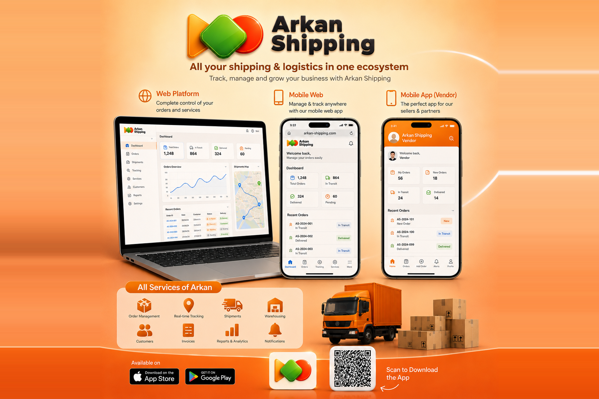
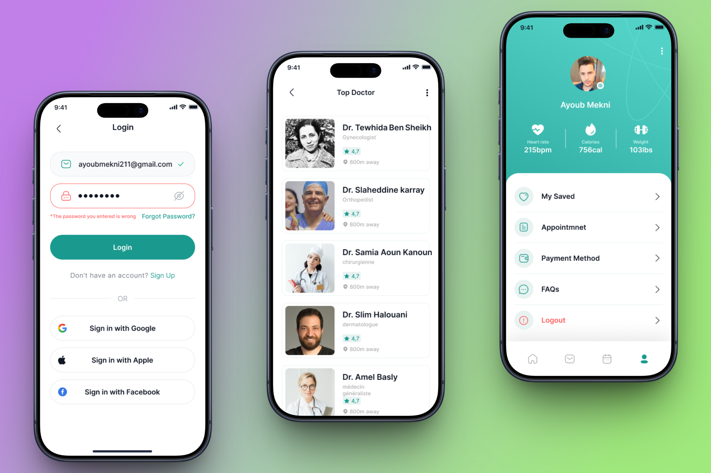
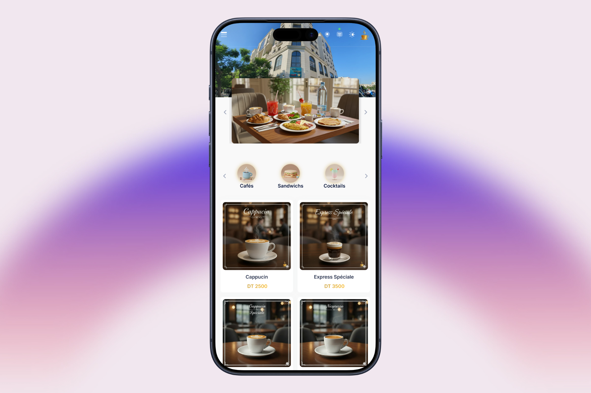
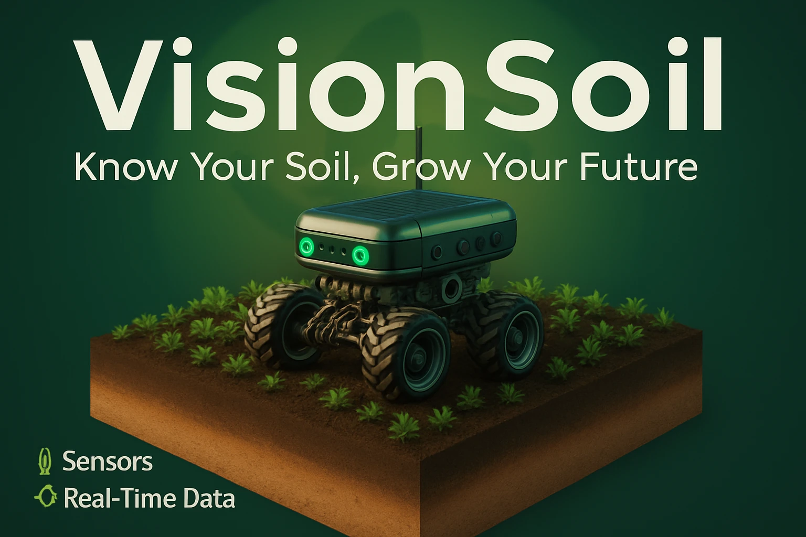
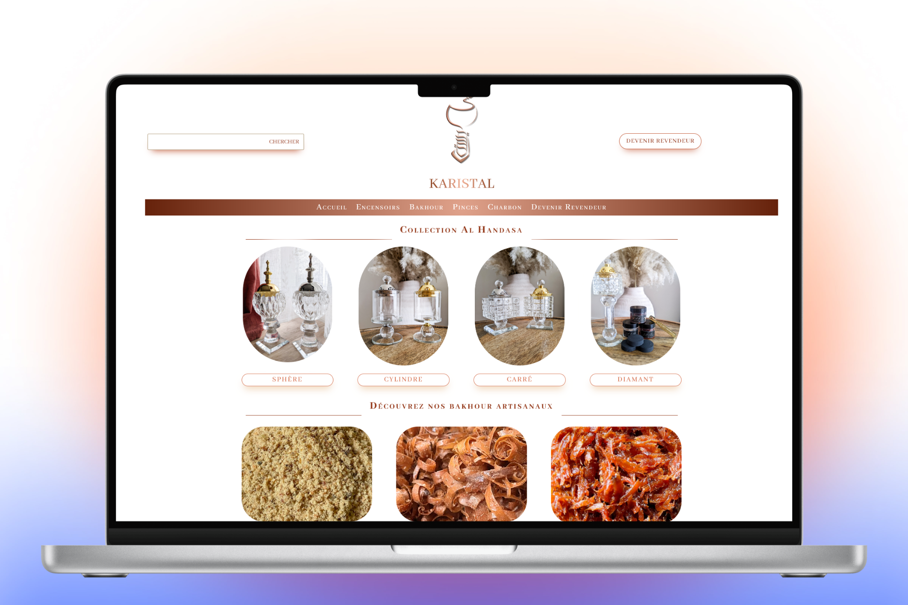
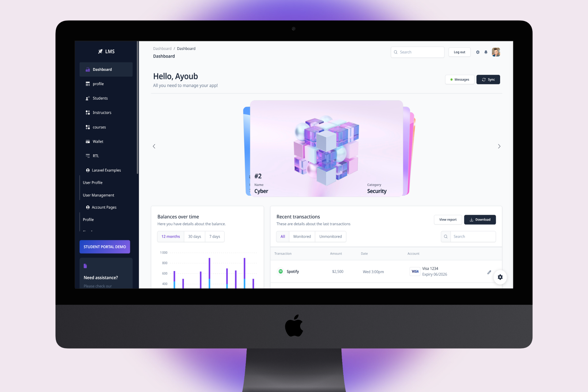
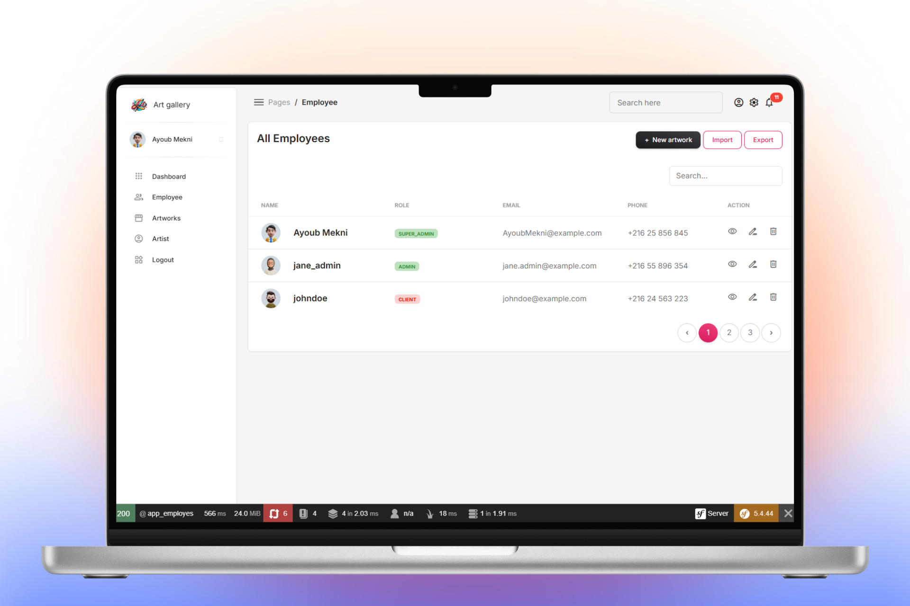
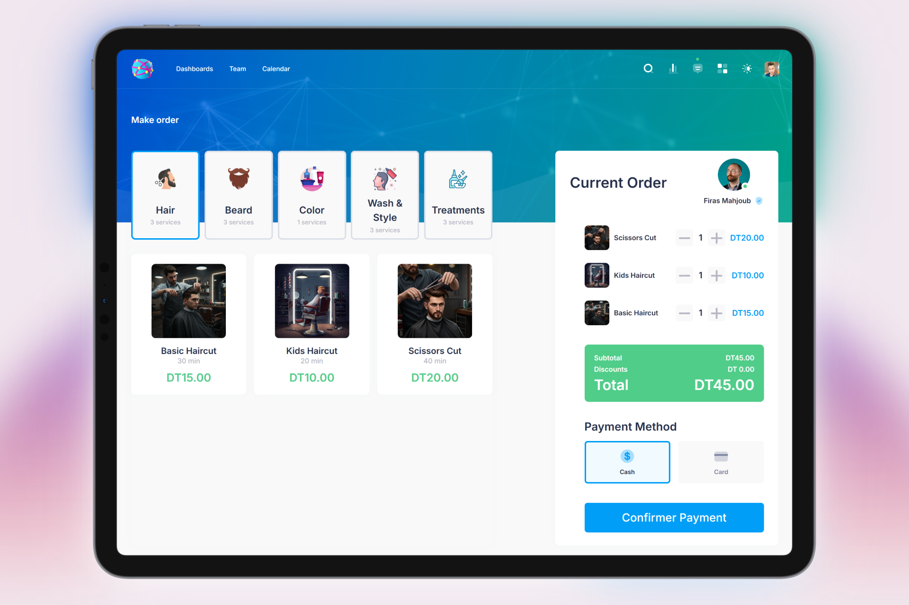
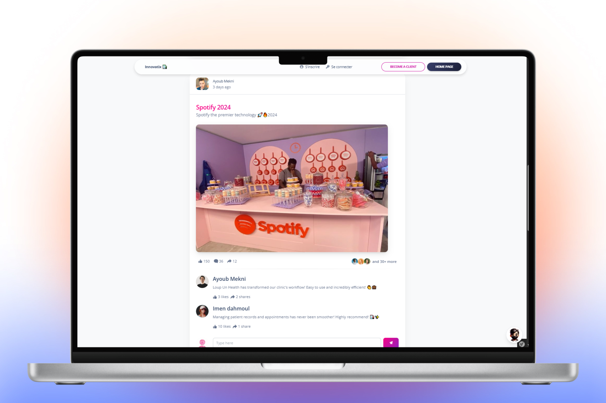

Arkan Shipping is an omni-channel logistics and financial ma...
Explore exciting collaboration opportunities with our blog. ...

MedLoop is a web and mobile medical management application t...

SmartCoffee is an application I designed to help cafes and r...

I participated in the VisionSoil project as part of a team c...

This project involved designing and developing a professiona...

This project involves developing a Learning Management Syste...

Art Gallery is a university project aimed at managing an art...

.webp)
Innovatix is a secure banking application developed with Sym...
Innovatix is the desktop version of the banking application,...
Recent Uploads

Arkan Shipping is an omni-channel logistics and financial management platform designed to centralize and automate the e-commerce order lifecycle—from sales confirmation to final delivery. The platform features a React-based Web Portal for logistics, CRM, and finance admins, and a Flutter mobile app for sellers to manage inventory and track shipments. Integrated with Magento APIs, Laravel background queues, and 3PL carriers (Aramex, Intigo, Phoenix), it automates waybill generation, real-time WebSocket order tracking, and Power BI financial reporting.
Explore exciting collaboration opportunities with our blog. We're open to partnerships, guest posts, and more. Join us to share your insights and grow your audience.
MedLoop is a web and mobile medical management application that centralizes all operations of a practice or clinic. Developed with Angular for the web frontend, Spring Boot for the backend, and a native mobile application under Android Studio (Java), it offers a fluid and intuitive interface for patients, doctors, and secretaries. The application allows patients to book appointments online with their doctors, consult and cancel their appointments, and access their complete medical record. Doctors have a complete dashboard with appointment management, consultation history, patient medical records, and the ability to note and track medical information. The medical secretary has a dedicated role to organize and control appointments, manage schedules, update patient information, and facilitate coordination between patients and doctors. MedLoop improves communication between patients and healthcare professionals, optimizes time and schedule management, and ensures secure and centralized access to medical information on the web and mobile devices.
SmartCoffee is an application I designed to help cafes and restaurants fully digitalize their menus. It allows for quick management of drinks and dishes, the use of a unique QR code for each table, real-time price updates, and offers a modern and intuitive interface. Deployed in 5 Tunisian cafes, it has modernized menu displays, improved staff organization, and optimized the customer experience.
I participated in the VisionSoil project as part of a team challenge, where I developed the Android mobile application. I connected the application to IoT sensors (ESP32, STM32, Raspberry Pi) and integrated Firebase for data management and authentication. I also set up a complete notification system, including SMS and emails, as well as automations: when sensors detect a problem (humidity, temperature, or plant health), the application sends alerts and can trigger certain automated actions on the robot. The application allows for real-time control of the robot, visualization of soil conditions, temperature, humidity, and plant status using an AI model (YOLOv4), and making intelligent decisions for irrigation and crop management.
This project involved designing and developing a professional website for a showroom
specializing in antiques and household items, offering a user-friendly platform to showcase
products and services.
Technologies: WordPress (CMS), Divi theme, plugins for SEO, contact
forms, and e-commerce functionalities.
My responsibilities:
I led the entire development process, from initial design to deployment, customizing the Divi
theme to create a unique and engaging user experience. I integrated e-commerce functionality
to facilitate online sales and product management, optimized the site for natural referencing
(SEO), ensured cross-browser compatibility and responsiveness on all devices, and trained the
client on content updates and site maintenance.
Results:
The site was successfully launched, receiving positive feedback from the client and improving
their online visibility. User engagement was strengthened thanks to intuitive navigation and
an attractive design, and the client was able to easily manage their products and sales via
the WordPress backend.
This project involves developing a Learning Management System (LMS) to manage online courses,
users, teachers, and learner tracking.
Technologies: Laravel for the backend, MySQL for the database, and a
responsive web interface for users.
My responsibilities:
I developed the backend with Laravel, creating user authentication, course management, content
publication, and learner progress tracking. I also integrated notifications and alerts to
inform users of new activities and assessments.
Results:
The LMS allows for effective management of online training, offers an intuitive interface for
users, and facilitates pedagogical tracking for teachers.
Art Gallery is a university project aimed at managing an art gallery. The application is developed with Spring Boot for the backend and Angular for the frontend, offering a modern and reactive interface. It allows for the management of artworks, artists, exhibitions, and users. I contributed to the system design and development, integrating data management, CRUD functionalities, as well as access security and fluid navigation between the different sections of the application.
Explore exciting collaboration opportunities with our blog. We're open to partnerships, guest posts, and more. Join us to share your insights and grow your audience.

Innovatix is a secure banking application developed with Symfony for the web. It allows users to manage their accounts, make transfers, view transaction history, and pay bills. The application offers a user-friendly interface with real-time data synchronization and enhanced security measures.
Innovatix is the desktop version of the banking application, developed with JavaFX. It offers the same features as the web version: account management, transfers, transaction history consultation, and bill payments. The application provides an intuitive and secure interface, with real-time data synchronization for a consistent experience on desktop.